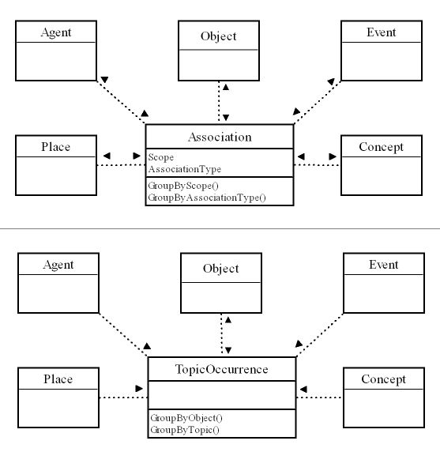

originally posted at archivemati.ca
I am now beginning work on the second alpha iteration of the open-source ICA-AtoM software application.
I am working on a considerable upgrade to the underlying object and database model which supports the application. As the application matures and evolves it will be relatively easy to make changes and updates to the application modules and user interfaces. However, it will be difficult to make significant changes to the database model once the application goes into active deployment and people start entering information. Therefore, I better get this right now...
ICA-AtoM must be flexible enough to support a wide variety of potential uses. Firstly, as an archival description package for individual archival institutions as well as a union catalog application that can combine descriptions from multiple repositories (e.g. for UNESCO's human rights archives portal project).
Beyond that, I have high hopes that ICA-AtoM can evolve to become an even more universal information cataloging tool that can be used, for example, to manage personal digital archives (e.g. family photos, home movies, music collections, etc) as well as other reference resources that typically support archival collections (e.g. encyclopedias, dictionaries, bibliographies, reference libraries, web links, etc.).
Therefore, I want to be sure that the ICA-AtoM information model supports the International Council on Archives standards out-of-the-box. At the same time, I want it to be flexible enough to support additional information cataloging and classification needs. I want it to be open, extensible and to anticipate the future wave of semantic information organization and sharing.
That's why I've spend some mind-bending hours revisiting a number of information architecture standards, communities and research projects.
I've gone everywhere from Dublin Core to Microformats to Semantic Web to modified pre-order tree traversal to object relational mapping to METS to EAD to OAIS to the Monash Project to the UBC Project to Topic Maps and back to ISAD(G) and ISAAR(CPF).
The most amusing stop on this magic mystery tour of information architecture was dropping in on the Semantic Web vs. Microformats stand-off and flame war.
The most useful stop was the Topic Map community and a surprisingly relevant article written by a Microsoft architect.
I posted a high-level architecture diagram for an archives access system on this blog last year. Now I am getting into the nitty-gritty of the information model that would support such a system.
Some of the guiding principles or goals for this base information model are:
Now my challenge will be to implement these design principle and objectives in a functional and optimal web-based application. This means that the complexity has to be hidden from the user and the application can't slow down to a crawl to process a number of complex relationships or database queries.
This is what I'll be working on over the next few weeks using the Symfony framework, its Propel object-relationship mapping layer and the MySQL database engine.
I am sure I'll have to make some compromises and tweaks along the way (keep in mind that this list is simply some research notes generated during my best practice analysis) but hopefully this investment will pay off in the long run to make the ICA-AtoM information model as flexible and powerful as possible.
